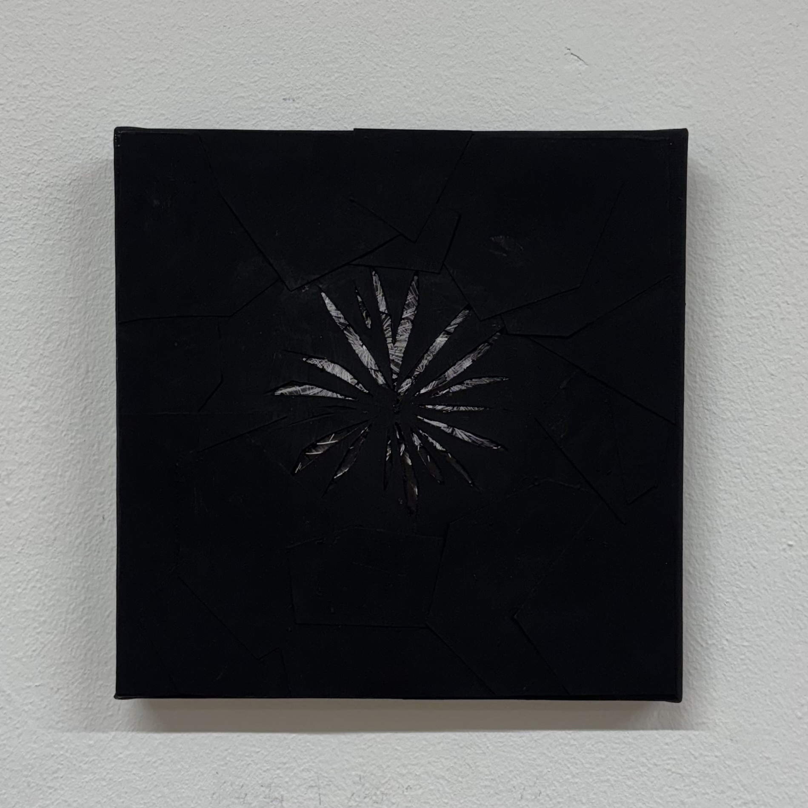

Otoato - 花火
2025 / Mix Media
デジタル化された音は、決して「朽ちる」ことがない。本作『Otoato - 花火』は、「残るもの」であるデータに、エモーションを与える試みである。
ARを通じて再生される花火の音は、聴いているそばからリアルタイムにデータが破壊され、二度と同じかたちを取ることなく崩壊していく。
すべての鑑賞体験は一回性の「現象」となり、デジタルな風景の中に「侘び寂び」を生み出す。消えゆく音は、データと記憶、そして儚いものの美しさを私たちに問いかける。